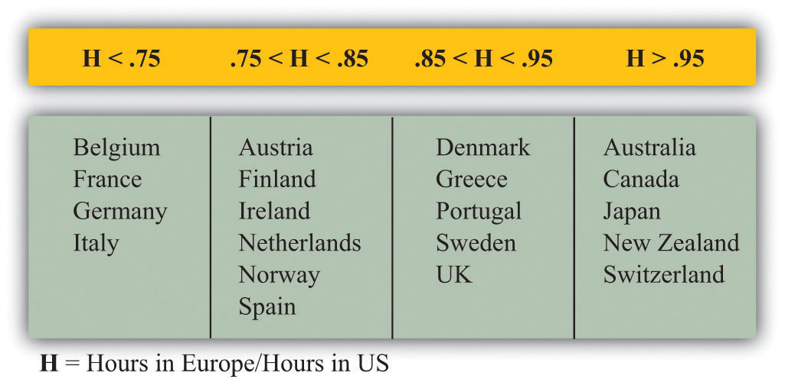
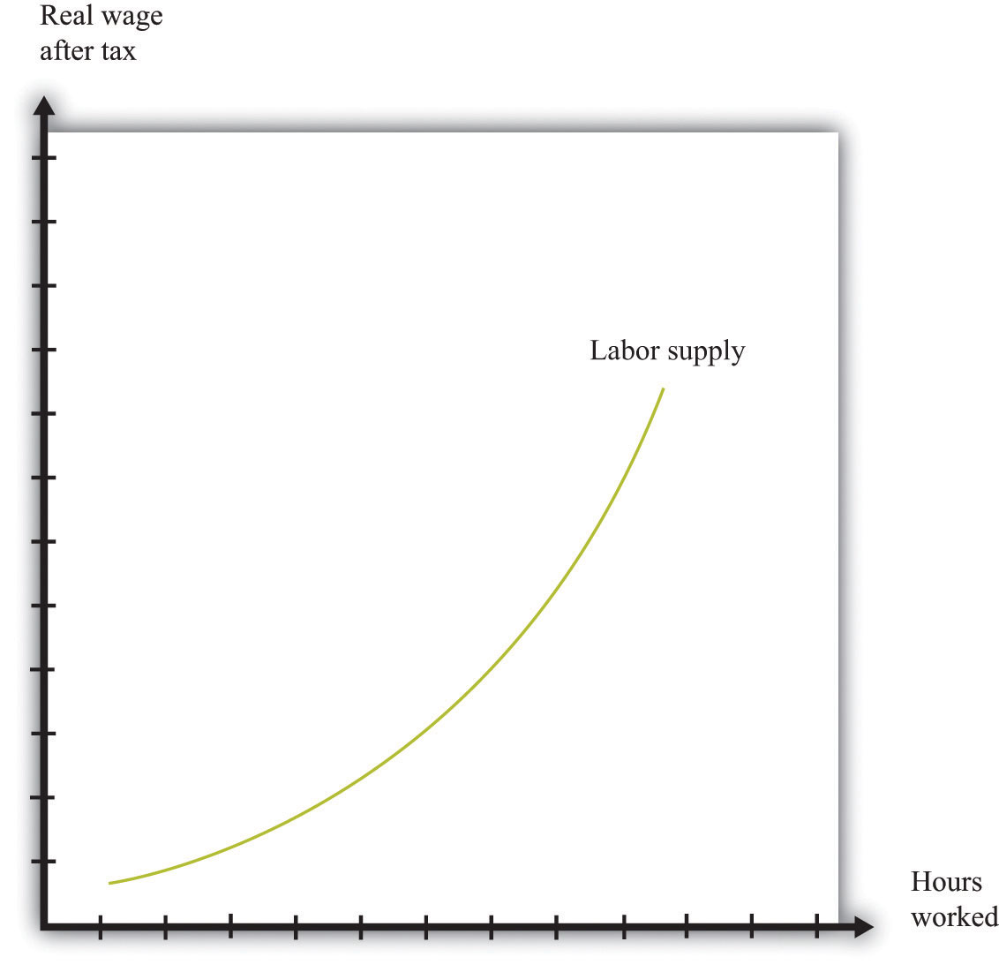
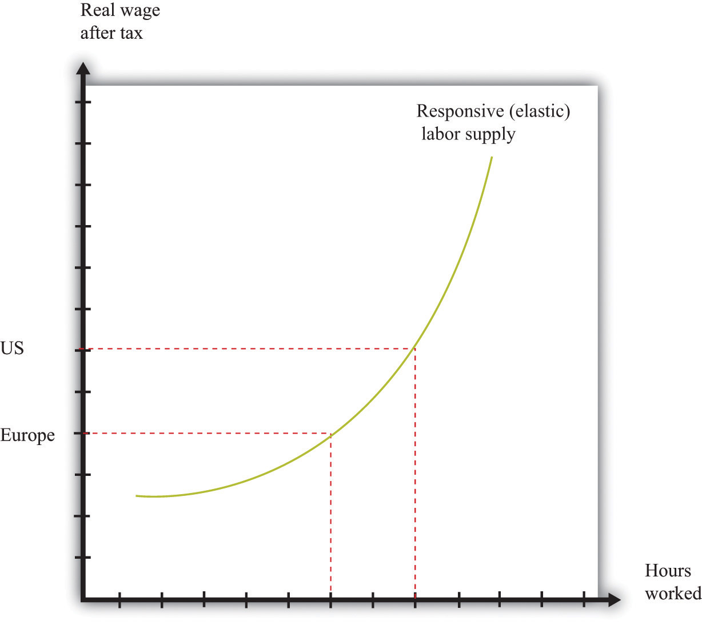
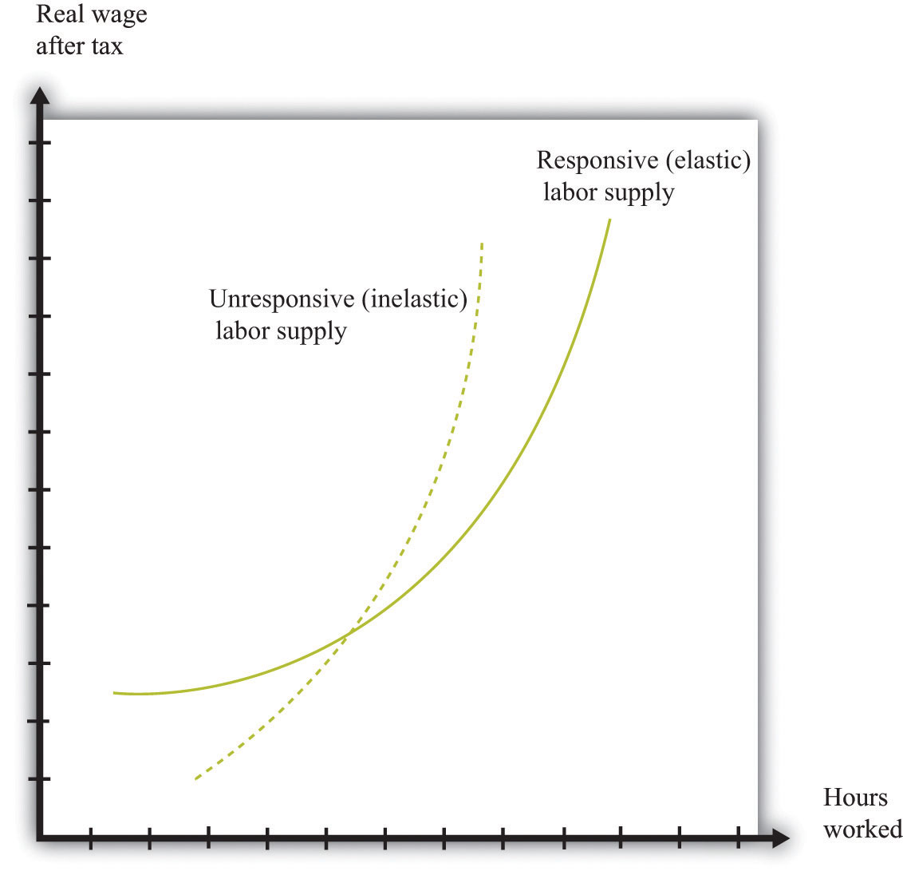

After you have read this section, you should be able to answer the following questions:
The total number of hours worked in an economy depends on both the number of people who are employed and the number of hours worked by each employed person. So far, we have said little or nothing about this second issue. But another significant difference between Europe and the United States is that people work less in Europe than in the United States. If you hear such a statement, perhaps on the radio, you might have some questions about this comparison.
Such questions simply mean that we had better be sure that we get our facts straight. We do this in the next part of this chapter. After that, we again turn to some theory to understand what is going on.Discussions of this topic by academics have been prompted by the work of Nobel Prize–winning economist Edward C. Prescott. The following article provides an overview and analysis of the key issues: Edward S. Prescott, “Why Do Americans Work So Much More Than Europeans?” Federal Reserve Bank of Minneapolis Quarterly Review 28, no. 1 (July): 2–13, accessed August 22, 2010, http://www.minneapolisfed.org/publications_papers/pub_display.cfm?id=905.
Figure 23.7 "Hours in Europe Relative to the United States" and Figure 23.8 "Annual Hours in Various Countries" show some basic facts about hours worked in the United States and Europe.Richard Rogerson, “Understanding Differences in Hours Worked,” Review of Economic Dynamics 9 (2006): 365–409. Figure 23.7 "Hours in Europe Relative to the United States" shows how hours worked in a number of different European countries compare to hours worked in the United States. More precisely, it shows the total hours worked by individuals between 15 and 64 years old divided by the number of people in that age group. The table does not distinguish by employment status: all working age people are counted, not just employed people.
Three of the largest European countries—France, Germany, and Italy—average less than 75 percent of the hours worked in the United States. Part of this difference is due to longer holidays in Europe, and part is due to the fact that the workweek in Europe is typically shorter. Because the table counts all working age people, the higher unemployment rate in Europe also contributes to the difference.
Figure 23.7 Hours in Europe Relative to the United States
Figure 23.8 "Annual Hours in Various Countries" looks at the hours worked in various countries over the 40 years from 1970 to 2009. The measure of hours is calculated in the same manner as Figure 23.7 "Hours in Europe Relative to the United States". Average hours worked have declined significantly in most of these countries. Meanwhile average hours worked in the United States have been more or less flat over these four decades. As a result, hours worked are now significantly higher in the United States than in any of these countries.The data come from OECD (2010), "Hours Worked: Average annual hours actually worked", OECD Employment and Labour Market Statistics (database). doi: 10.1787/data-00303-en (Accessed on 18 October 2011) http://scholar.harvard.edu/alesina/files/work_and_leisure_in_the_u.s._and_europe.pdf. Figure 1 shows a similar pattern of divergence in hours worked for employed people, though the hours worked per employed person has declined in all countries over this period.
Research by the Nobel Prize–winning economist Edward Prescott paints a similar picture. He reports that from 1993 to 1996, the hours worked per person in France were about 68 percent of the level in the United States. In addition, US output per person was much higher than in Europe. Prescott explains this difference based on the number of hours worked, not by differences in output per hour worked. In other words, the United States is richer, not because it is more productive but simply because people work more.
Figure 23.8 Annual Hours in Various Countries

The immediate question is, why do people work more in the United States? A natural place to look for explanations is the labor supply decisions of households. One possibility is simply that the tastes of US and European households are different. Perhaps Europeans prefer having fewer goods and more leisure. Although this is possible, economists prefer to start from the presumption that people have broadly similar tastes and look first to see if there are other plausible explanations.
The differences in hours worked are not explained by Europeans having poorer technology. Both the United States and European countries are highly developed, so technologies used in one country are used in the others as well. Supporting this is the fact that, as we already noted, productivity does not appear to be lower in Europe.
Another candidate explanation is that there are differences in the tax system. Figure 23.9 "Labor Supply" shows an individual labor supply curveA curve that indicates how many hours of labor an individual supplies at different values of the real wage.—in either Europe or the United States. Notice in Figure 23.9 "Labor Supply" the wage on the vertical axis is the real wage after taxes. This is defined as follows:
real wage after taxes = real wage × (1 − tax rate).In this equation, the tax rate is a marginal tax rate. This means that it is the tax paid on the extra amount you earn if you work a little bit more. Suppose the tax rate is 0.40 and your real wage per hour is $10. Then, if you work an extra hour, you pay $4 to the government, and you retain $6.
Figure 23.9 Labor Supply
Toolkit: Section 31.3 "The Labor Market"
If you want to see the underpinnings of the labor supply curve, you can look in the toolkit.
Figure 23.9 "Labor Supply" shows that an increase in the after-tax real wage will cause an individual to supply more time to the market and thus consume less time as leisure. The increase in the wage creates an incentive for the individual to substitute away from leisure because it has become more costly.
Suppose that we compare two identical individuals in Europe and the United States. If the marginal tax rate in Europe is higher than it is in the United States, then the after-tax wage in Europe will be smaller. Since labor supply is upward sloping, individuals in Europe will work less than individuals in the United States. For this to be a convincing explanation, two things must be true:
Marginal tax rates are indeed lower in the United States than in Europe. Recent research finds that the marginal tax rate on labor income is about 34.5 percent in the United States compared to 57.7 percent in Europe (Germany, France, Italy, and the United Kingdom).Alberto F. Alesina, Edward L. Glaeser, and Bruce Sacerdote, “Work and Leisure in the U.S. and Europe: Why So Different?” (Harvard Institute for Economic Research, Working Paper #2068, April 2005), accessed June 30, 2011, http://www.colorado.edu/Economics/morey/4999Ethics/AlesinaGlaeserSacerdote2005.pdf. So, if you work an extra hour and earn a pretax wage of $10, then you would keep $6.55 in the United States and $4.23 in Europe.
The evidence is also consistent with the view that labor supply increases as the after-tax real wage increases. Figure 23.10 "Differences in Hours Supplied" shows the implication of this. On the vertical axis are two different levels of the after-tax real wage: a low one for Europe and a higher one for the United States. These differences in the after-tax real wage translate into differences in hours, using the labor supply curve of an individual. Thus, as in Figure 23.10 "Differences in Hours Supplied", individuals in the United States work more hours than in Europe. As this is true for everyone in the labor force, this argument immediately translates into a statement about hours worked for the aggregate economy.
Figure 23.10 Differences in Hours Supplied
There are two real wages after taxes shown: one for Europe and one for the United States. These differences in real wages translate into differences in hours worked.
Can the difference in the after-tax real wage explain the observed difference in hours worked? This depends on how responsive labor supply is to changes in the real wage. Figure 23.11 "Responsive and Unresponsive Labor Supply" shows two labor supply curves. In one case (the solid curve), labor supply is very responsive to changes in the wage. Relatively small differences in taxes then have substantial effects on hours worked. In the other case (the dashed curve), labor supply is not very responsive to the wage. Differences in tax rates are then unlikely to be able to explain the differences in hours worked.
Figure 23.11 Responsive and Unresponsive Labor Supply
For the solid labor supply curve, hours worked responds strongly to changes in the real wage after taxes, while for the dashed curve, the response is very weak.
Prescott argues that the difference in taxes between the United States and Europe is enough to account for the differences in hours worked. To make this argument, Prescott holds fixed the labor supply curve (Figure 23.10 "Differences in Hours Supplied") across countries and asks how much of the observed difference in hours can be explained by tax policy. This is a movement along the labor supply curve because the vertical axis measures the after-tax real wage. To support this argument, however, Prescott assumes that labor supply is indeed quite responsive to changes in after-tax wages.